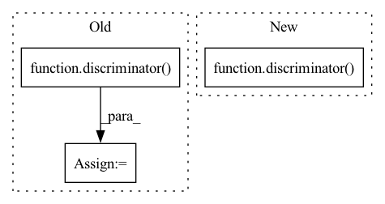

Pattern ID :7309

Before Change
logger.info(f"Creating model `{args.arch}`")
self.generator = models.__dict__[args.arch]().to(self.device)
logger.info(f"Creating discriminator model")
self.discriminator = discriminator().to(self.device)
self.generator = self.generator.apply(weights_init)
self.discriminator = self.discriminator.apply(weights_init)
// Parameters of pre training model.
self.start_epoch = math.floor(args.start_iter / len(self.dataloader))
After Change
logger.info(f"Creating model `{args.arch}`")
self.generator = models.__dict__[args.arch]().to(self.device)
logger.info(f"Creating discriminator model")
self.discriminator = discriminator(image_size=args.image_size, channels=args.channels).to(self.device)
// Parameters of pre training model.
self.start_epoch = math.floor(args.start_iter / len(self.dataloader))
In pattern: SUPERPATTERN
Frequency: 5
Non-data size: 3
Instances
Fragment ID: 24410246
Project Name: lornatang/gan-pytorch
Commit Name: 0d8b04a0b23494a6ee52c82eb57a8b463c8887b4
Time: 2021-02-19
Author: liuchangyu1111@gmail.com
File Name: trainer.py
M Class Name: Trainer
N Class Name: Trainer
M Method Name: __init__(2)
N Method Name: __init__(2)
M Parent Class: object
N Parent Class: object
M File Name: trainer.py
N File Name: trainer.py
M Start Line: 94
M End Line: 102
N Start Line: 98
N End Line: 98
'>
Before Change
def adversarial_loss(self, inputs, lengths, targets, targets_present, discriminator):
outputs, log_probs, logits = self.forward(inputs, lengths, targets, targets_present, is_advtrain=True)
fake_predictions = discriminator(inputs, lengths, outputs, targets_present)
est_state_values = discriminator.critic(outputs)
rl_loss, critic_loss = self.calculate_reinforce_objective(log_probs, fake_predictions, targets_present,
est_state_values)
return (rl_loss, critic_loss)
After Change
r Calculate adversarial loss
outputs, log_probs, logits = self.forward(inputs, lengths, targets, targets_present)
fake_predictions, _ = discriminator(inputs, lengths, outputs, targets_present, self.embedder)
fake_predictions = fake_predictions.detach()
est_state_values = discriminator.critic(inputs, outputs, self.embedder)
rl_loss, critic_loss = self.calculate_reinforce_objective(log_probs, fake_predictions, targets_present,
est_state_values)
'>
Fragment ID: 24410247
Project Name: rucaibox/textbox
Commit Name: cc5517ab006f13503389f456551219a634d7ca28
Time: 2020-12-26
Author: 1318829605@qq.com
File Name: textbox/module/Generator/MaskGANGenerator.py
M Class Name: MaskGANGenerator
N Class Name: MaskGANGenerator
M Method Name: adversarial_loss(6)
N Method Name: adversarial_loss(6)
M Parent Class: GenerativeAdversarialNet
N Parent Class: GenerativeAdversarialNet
M File Name: textbox/module/Generator/MaskGANGenerator.py
N File Name: textbox/module/Generator/MaskGANGenerator.py
M Start Line: 191
M End Line: 191
N Start Line: 190
N End Line: 192
'>
Before Change
D_expert = discriminator(expert_state, expert_action, expert_next_state, policy)
with torch.no_grad():
policy = agent.log_prob(policy_state, policy_action).exp()
D_policy = discriminator(policy_state, expert_action, policy_next_state, policy)
discriminator_optimiser.zero_grad()
expert_loss = F.binary_cross_entropy(D_expert, torch.ones_like(D_expert)) // Loss on "real" (expert) data
After Change
D_expert = discriminator(expert_state, expert_action)
D_policy = discriminator(policy_state, policy_action)
elif algorithm == "AIRL":
D_expert = discriminator(expert_state, expert_action, expert_next_state, agent.log_prob(expert_state, expert_action).exp())
D_policy = discriminator(policy_state, expert_action, policy_next_state, agent.log_prob(policy_state, policy_action).exp())
discriminator_optimiser.zero_grad()
'>
Fragment ID: 24410240
Project Name: kaixhin/imitation-learning
Commit Name: fd3ee1838359dcc6da9836b6249396e595ff90db
Time: 2020-04-16
Author: design@kaixhin.com
File Name: training.py
M Class Name: AnonimousClass
N Class Name: AnonimousClass
M Method Name: adversarial_imitation_update(7)
N Method Name: adversarial_imitation_update(7)
M Parent Class:
N Parent Class:
M File Name: training.py
N File Name: training.py
M Start Line: 69
M End Line: 74
N Start Line: 67
N End Line: 68
'>
Before Change
D_policy = discriminator(policy_state, policy_action)
elif algorithm == "AIRL":
D_expert = discriminator(expert_state, expert_action, expert_next_state, agent.log_prob(expert_state, expert_action).exp())
D_policy = discriminator(policy_state, expert_action, policy_next_state, agent.log_prob(policy_state, policy_action).exp())
discriminator_optimiser.zero_grad()
expert_loss = F.binary_cross_entropy(D_expert, torch.ones_like(D_expert)) // Loss on "real" (expert) data
After Change
expert_data_policy = agent.log_prob(expert_state, expert_action).exp()
policy_data_policy = agent.log_prob(policy_state, policy_action).exp()
D_expert = discriminator(expert_state, expert_action, expert_next_state, expert_data_policy)
D_policy = discriminator(policy_state, expert_action, policy_next_state, policy_data_policy)
discriminator_optimiser.zero_grad()
expert_loss = F.binary_cross_entropy(D_expert, torch.ones_like(D_expert)) // Loss on "real" (expert) data
'>
Fragment ID: 24410242
Project Name: kaixhin/imitation-learning
Commit Name: a14696ab6532e8d552910e2ad1076b09a46a7281
Time: 2020-04-16
Author: design@kaixhin.com
File Name: training.py
M Class Name: AnonimousClass
N Class Name: AnonimousClass
M Method Name: adversarial_imitation_update(7)
N Method Name: adversarial_imitation_update(7)
M Parent Class:
N Parent Class:
M File Name: training.py
N File Name: training.py
M Start Line: 67
M End Line: 68
N Start Line: 77
N End Line: 81
'>
Before Change
def test_discriminator(self, ae_celeba_config, celeba_like_data, recon_layer):
discriminator = LayeredDiscriminator_CELEBA(ae_celeba_config).to(device)
score = discriminator(celeba_like_data, output_layer_level=recon_layer).adversarial_cost
if recon_layer == 1:
assert score.shape[1] == 128
After Change
discriminator = Discriminator_CELEBA(ae_celeba_config).to(device)
scores = discriminator(celeba_like_data, output_layer_levels=recon_layers)
if recon_layers is None:
assert "embedding" in scores.keys()
'>
Fragment ID: 24410239
Project Name: clementchadebec/benchmark_vae
Commit Name: 85a39bf500137e20365883af8964b4e22d655fe0
Time: 2022-01-17
Author: 47564971+clementchadebec@users.noreply.github.com
File Name: tests/test_nn_benchmark.py
M Class Name: Test_CELEBA_Benchmark
N Class Name: Test_CELEBA_Benchmark
M Method Name: test_discriminator(4)
N Method Name: test_discriminator(4)
M Parent Class:
N Parent Class:
M File Name: tests/test_nn_benchmark.py
N File Name: tests/test_nn_benchmark.py
M Start Line: 188
M End Line: 211
N Start Line: 449
N End Line: 482